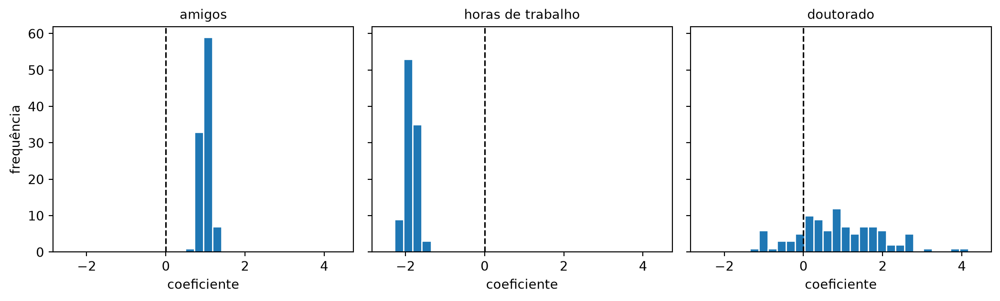

from typing import List, Tuple
from scratch.linear_algebra import Vector
learning_rate = 0.001
def estimate_sample_beta(pairs: List[Tuple[Vector, float]]) -> Vector:
x_sample = [x for x, _ in pairs]
y_sample = [y for _, y in pairs]
return least_squares_fit(x_sample, y_sample, learning_rate, 5000, 25)Erros Padrão dos Coeficientes
Nota
Esta seção corresponde a Standard Errors of Regression Coefficients, do capítulo 15 de Grus (2019).
A seção 12.5 precisava saber quanto confiar em cada coeficiente, e a via clássica exigia álgebra linear que este livro não construiu. A seção 12.6 trouxe uma alternativa que não exige teoria nenhuma. Agora é só apontar uma para a outra.
A ideia é literalmente a mesma da seção anterior, com beta no lugar da mediana: reamostramos os dados com reposição, reajustamos o modelo em cada reamostra e olhamos como cada coeficiente varia. Se o coeficiente de num_amigos mal se move entre as reamostras, temos boa razão para confiar nele. Se ele oscila muito, não temos.
Reamostrando pares
Há uma única sutileza técnica. Não podemos reamostrar inputs e daily_minutes_good separadamente — isso embaralharia quais minutos pertencem a qual usuário. Precisamos reamostrar pares \((x_i, y_i)\) e desmontá-los depois:
E então é uma chamada só:
random.seed(0) # para você obter os mesmos resultados
# Isto leva mais de um minuto!
bootstrap_betas = bootstrap_statistic(list(zip(inputs, daily_minutes_good)),
estimate_sample_beta,
100)
len(bootstrap_betas), bootstrap_betas[0](100,
[30.49402029547431,
1.0393791030498782,
-1.9516851948558498,
0.7483721251697389])
Nota
Cem ajustes completos, cada um com 5.000 passos de gradiente descendente sobre 203 pontos, em Python puro. Isso leva cerca de 90 segundos nesta renderização, e é o chunk mais caro deste capítulo.
O custo é o preço do método, não um defeito da nossa implementação: o bootstrap é repetir a estimativa cem vezes. O próprio Grus (2019) observa que estimativas melhores viriam de mais amostras e mais iterações por amostra, “mas não temos o dia inteiro”.
Vale ver o custo como informação, não como incômodo. Quando a estatística é barata — a mediana da seção anterior —, o bootstrap é praticamente gratuito e não há razão para não usá-lo. Quando ela é cara, o bootstrap multiplica esse custo por cem, e aí a fórmula fechada da abordagem clássica deixa de ser um luxo teórico e passa a ser a diferença entre um segundo e uma tarde.
Com os 100 vetores em mãos, o erro padrão de cada coeficiente é o desvio padrão daquela coordenada:
bootstrap_standard_errors = [
standard_deviation([beta[i] for beta in bootstrap_betas])
for i in range(4)]
bootstrap_standard_errors[1.2715078186272786,
0.10318410116073962,
0.15510591689663625,
1.2490975248051261]random.seed(0)
beta = least_squares_fit(inputs, daily_minutes_good, learning_rate, 5000, 25)
nomes = ["constante", "amigos", "horas de trabalho", "doutorado"]
for nome, b, s in zip(nomes, beta, bootstrap_standard_errors):
print(f"{nome:20s} {b:8.4f} ± {s:.4f}")constante 30.5148 ± 1.2715
amigos 0.9748 ± 0.1032
horas de trabalho -1.8507 ± 0.1551
doutorado 0.9141 ± 1.2491Os números já dizem a história antes de qualquer teste. O coeficiente de amigos é 0,975 com erro padrão de 0,103 — quase dez vezes maior que a própria incerteza. O de doutorado é 0,914 com erro padrão de 1,249: a incerteza é maior que a estimativa.

O gráfico mostra o que a tabela resume, e a escala compartilhada é o que torna a comparação legítima: com um eixo por painel, três distribuições de larguras completamente diferentes pareceriam igualmente espalhadas. Na mesma régua, amigos e horas de trabalho se apertam em faixas estreitas, inteiramente de um lado do zero — nenhuma das 100 reamostras produziu um coeficiente de sinal trocado. A de doutorado ocupa quase toda a largura do gráfico e atravessa o zero: uma boa parte das reamostras produziu um coeficiente negativo.
for i, nome in zip([1, 2, 3], ["amigos", "horas de trabalho", "doutorado"]):
coluna = [b[i] for b in bootstrap_betas]
negativos = sum(1 for v in coluna if v < 0)
print(f"{nome:20s} de {min(coluna):7.3f} a {max(coluna):6.3f} "
f"negativos: {negativos:3d} de 100")amigos de 0.767 a 1.458 negativos: 0 de 100
horas de trabalho de -2.270 a -1.513 negativos: 100 de 100
doutorado de -2.009 a 3.885 negativos: 27 de 100De erro padrão a valor-p
O erro padrão permite testar a hipótese “\(\beta_j\) é igual a 0”. Sob essa hipótese nula — e sob as suposições sobre a distribuição de \(\varepsilon_i\) —, a estatística
\[ t_j = \frac{\hat{\beta_j}}{\hat{\sigma_j}} \]
(a estimativa do coeficiente dividida pela estimativa do erro padrão dele) segue uma distribuição t de Student com \(n - k\) graus de liberdade.
Se você nunca encontrou a t: ela é uma parente da normal padrão, com o mesmo formato de sino, um pouco mais achatada e com caudas mais gordas — é o que sobra quando você divide por um desvio padrão que também foi estimado dos dados, em vez de conhecido. O quanto ela engorda depende dos graus de liberdade, que são o número de observações menos o número de parâmetros que você já gastou estimando (\(n - k\)): quanto mais pontos sobram por parâmetro, mais confiável é o desvio padrão estimado e menos a t se afasta da normal.
Não temos uma função students_t_cdf, e escrevê-la do zero seria uma digressão maior que este capítulo comporta. Mas conforme os graus de liberdade crescem, a t se aproxima cada vez mais de uma normal padrão — e com \(n = 203\) e \(k = 4\), essa aproximação é boa o bastante. Usamos a normal_cdf que já temos:
from scratch.probability import normal_cdf
def p_value(beta_hat_j: float, sigma_hat_j: float) -> float:
if beta_hat_j > 0:
# se o coeficiente é positivo, precisamos calcular o dobro da
# probabilidade de ver um valor ainda *maior*
return 2 * (1 - normal_cdf(beta_hat_j / sigma_hat_j))
else:
# caso contrário, o dobro da probabilidade de ver um valor *menor*
return 2 * normal_cdf(beta_hat_j / sigma_hat_j)
# os coeficientes abaixo são os do livro impresso, que são a solução exata;
# os nossos, na tabela acima, vêm do gradiente descendente e diferem na
# segunda ou terceira casa. Os erros padrão são os nossos, do bootstrap.
assert p_value(30.58, 1.27) < 0.001 # termo constante
assert p_value(0.972, 0.103) < 0.001 # amigos
assert p_value(-1.865, 0.155) < 0.001 # horas de trabalho
assert p_value(0.923, 1.249) > 0.4 # doutoradoprint(f"{'variável':<20}{'coef.':>9}{'erro padrão':>14}{'t':>9}{'valor-p':>10}")
for nome, b, s in zip(nomes, beta, bootstrap_standard_errors):
print(f"{nome:<20}{b:9.4f}{s:14.4f}{b/s:9.3f}{p_value(b, s):10.4f}")variável coef. erro padrão t valor-p
constante 30.5148 1.2715 23.999 0.0000
amigos 0.9748 0.1032 9.447 0.0000
horas de trabalho -1.8507 0.1551 -11.932 0.0000
doutorado 0.9141 1.2491 0.732 0.4643O valor-p responde a: se o coeficiente verdadeiro fosse exatamente zero, com que frequência o acaso da amostragem produziria uma estimativa tão distante de zero quanto a que eu obtive?
Para amigos e horas de trabalho, a resposta é “praticamente nunca” — esses efeitos são reais. Para doutorado, a resposta é “quase metade das vezes”. Um coeficiente de 0,914 com erro padrão de 1,249 é perfeitamente compatível com um efeito verdadeiro de zero, e também com um efeito de \(-1\) ou de \(+3\). Não sabemos.
NotaA hipótese que o bootstrap não precisou fazer
Repare no que não foi preciso supor para chegar até aqui. A via clássica — a fórmula fechada que a seção 12.5 mencionou e que o callout no fim desta seção mostra em uso — parte de erros normais, independentes e com variância constante: a dispersão em torno do modelo tem que ser a mesma para quem passa 10 minutos por dia no site e para quem passa 90. Essa última exigência tem nome — homocedasticidade — e a seção 11.3 prometeu que voltaríamos a ela. É aqui.
Quando ela não vale, o caso comum é o erro crescer junto com o valor previsto: o modelo acerta na faixa baixa e erra feio na alta. Nesse cenário, o ajuste de mínimos quadrados continua devolvendo coeficientes utilizáveis, mas os erros padrão da fórmula fechada saem errados — e não erram todos para o mesmo lado, o que impediria até de corrigir a leitura de cabeça. O que quebra, então, é exatamente a camada que esta seção construiu: o erro padrão, o t e o valor-p. Nada na tabela de saída avisa; um coeficiente pode aparecer com p < 0,001 só porque a fórmula supôs uma variância que os dados não têm.
O bootstrap de pares não faz essa suposição. Ele reamostra \((x_i, y_i)\) juntos, então cada reamostra herda a estrutura de dispersão do conjunto original, seja ela qual for — a dispersão dos 100 beta reflete a variabilidade que os dados de fato têm, não a que um modelo de erros supôs que eles teriam. É o que se compra com os 90 segundos de CPU: hipóteses a menos.
Por que justamente o doutorado
Este resultado não deveria surpreender quem leu a seção 12.2: tem_doutorado é quase determinado por num_amigos, e a comparação capaz de separar os dois efeitos — mesmo número de amigos, formação diferente — só existe nos 22 usuários daquela seção.
Isso é multicolinearidade quase perfeita, e o erro padrão de 1,249 é exatamente a forma como ela se manifesta. Cada reamostra bootstrap sorteia um punhado diferente daqueles 22 usuários, e o coeficiente balança junto.
Importante
Repare no arco que se fechou até aqui. A seção 12.2 apontou uma propriedade estrutural dos dados. A seção 12.4 explicou por que ela torna a frase “mantendo tudo o mais constante” vazia para aquele coeficiente. A seção 12.5 mostrou que o R² é cego para esse tipo de problema. E o bootstrap, sem saber nada de nada disso — sem teoria, sem álgebra, sem sequer olhar para a matriz de correlações —, mediu o efeito no número que interessa.
Falta o passo que age sobre esse diagnóstico. Até agora, tudo o que sabemos fazer com o coeficiente do doutorado é olhar a tabela, ver o 1,249 e decidir à mão remover a variável — o que exige um humano, um critério e uma rodada a mais de ajuste. A seção 12.8 muda o objetivo que o ajuste persegue, de modo que um coeficiente que os dados não sustentam encolha sozinho, sem que ninguém precise olhar tabela nenhuma.
AvisoO que um valor-p não é
Três leituras erradas, todas comuns:
- “p = 0,46 prova que o doutorado não tem efeito.” Não prova. Prova que estes dados não conseguem distinguir o efeito de zero, o que é diferente. Ausência de evidência não é evidência de ausência — e neste caso sabemos até por que os dados não conseguem: eles quase não contêm a comparação necessária.
- “p < 0,05, então o efeito é importante.” Significância estatística é sobre distinguir de zero, não sobre tamanho. Com dados suficientes, um efeito de 0,001 minuto por amigo sairia com p < 0,001 e não teria a menor relevância prática.
- “testei vinte variáveis e uma deu p < 0,05.” Esperado: testando vinte variáveis inúteis a 5%, sai em média uma “significativa” por puro acaso. É o mesmo mecanismo que a seção 12.5 mostrou com as vinte colunas de ruído, agora vestido de teste de hipótese.
Testes mais elaborados — “pelo menos um dos \(\beta_j\) é diferente de zero”, ou “\(\beta_1\) é igual a \(\beta_2\)” — existem, e o instrumento se chama teste F. Ele está fora do escopo deste livro, mas fica o nome para quando você precisar procurá-lo.
DicaNa prática:
statsmodels
O fecho desta seção não é o scikit-learn, e a razão é direta: o scikit-learn simplesmente não faz isto. LinearRegression devolve coef_ e nada mais: nem erro padrão, nem valor-p, nem intervalo de confiança. Não é uma omissão; é uma decisão de projeto. A biblioteca é feita para prever, e para prever esses números não servem.
Quem faz é o statsmodels — que, aviso, não vem no contêiner deste livro: para rodar o código abaixo você precisa instalá-lo (pip install statsmodels) no seu próprio ambiente. A razão é a mesma que o parágrafo acima explica: ele não é a ferramenta desta disciplina. (Os fechos que mostram PyTorch, Keras ou networkx estão na mesma situação, pelo mesmo motivo — nenhum deles vem no contêiner.)
import statsmodels.api as sm
modelo = sm.OLS(daily_minutes_good, inputs).fit() # inputs JÁ tem a coluna de 1
print(modelo.summary())summary() imprime, de uma vez, a tabela que nós montamos à mão: coeficiente, erro padrão, estatística t, valor-p e intervalo de confiança de 95% para cada variável — mais R², R² ajustado, estatística F e uma lista de avisos de diagnóstico. Repare que sm.OLS espera a coluna de 1 explícita, exatamente como o nosso código (há sm.add_constant para quem não a tem), e resolve por álgebra linear em vez de gradiente descendente.
A diferença de fundo: os erros padrão do statsmodels vêm da fórmula fechada, sob a hipótese de erros normais independentes com variância constante. Os nossos vieram do bootstrap, que não assume nada disso. Nestes dados os dois caminhos chegam perto: Grus (2019) registra, ao lado dos valores bootstrap, os erros exatos calculados pela fórmula — 1,19 / 0,080 / 0,127 / 0,998, contra os nossos 1,272 / 0,103 / 0,155 / 1,249.
É tentador ler essa folga como imprecisão do bootstrap e supor que mais reamostras fechariam a diferença. Não fecham. Com 400 reamostras em vez de 100, estes dados dão 1,302 / 0,102 / 0,154 / 1,236: os dois do meio mal se mexem e o do termo constante sobe, andando para longe de 1,19. Nem poderia ser diferente — o desvio padrão de \(B\) réplicas bootstrap não tem viés para cima que se dissolva com \(B\) maior. Aumentar \(B\) deixa a estimativa mais estável, e é só isso: ela converge, mas converge para o número do bootstrap, não para o número da fórmula.
Os dois não convergem um para o outro porque medem alvos diferentes. A fórmula responde: qual seria a dispersão de \(\beta\) se os erros fossem normais, independentes e de variância constante? O bootstrap responde: qual é a dispersão de \(\beta\) quando eu reamostro estes pares? Só sob as hipóteses da fórmula as duas perguntas têm a mesma resposta. Que elas discordem um pouco é informação sobre os dados — o sinal de que alguma hipótese da fórmula não descreve bem este conjunto —, não imprecisão de nenhum dos dois.
O que interessa é o padrão, e ele é idêntico pelos dois caminhos: o erro do doutorado é uma ordem de grandeza maior que o de amigos, e maior que o próprio coeficiente. Quando os dois discordam de verdade, é o bootstrap que merece mais crédito, porque ele nunca dependeu da hipótese que provavelmente é a que caiu.
Grus, Joel. 2019. Data Science from Scratch: First Principles with Python. 2nd ed. O’Reilly Media.